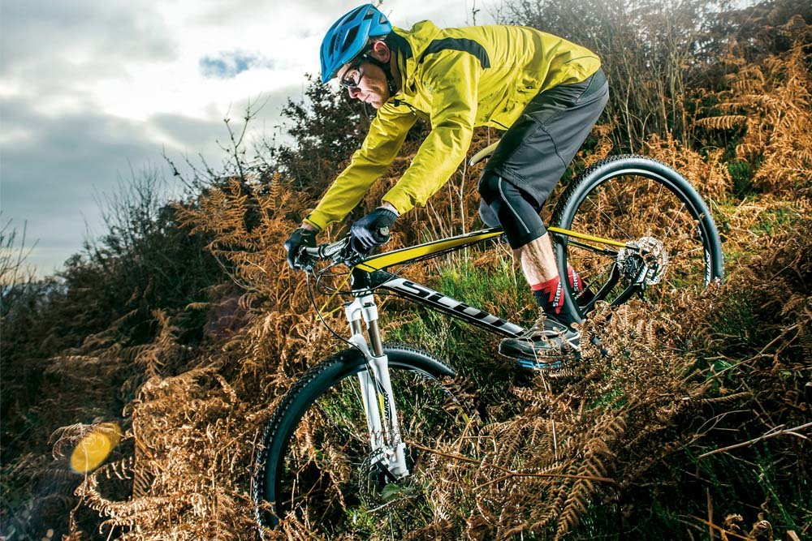

Горный велосипед (англ. mountain bike, сокращённо MTB) — велосипед, предназначенный для катания вне дорог (хотя и не исключает обратного), и вследствие этого, имеющий особую конструкцию, отличную от шоссейного, трекового и дорожного (городского) велосипедов. Также «горный велосипед» — совокупное название спортивных дисциплин, связанных с использованием горного велосипеда.

Считается, что первый горный велосипед, который был оснащён многоуровневой рамой и передней подвеской, а также широкими покрышками, появился в 30-х годах ХХ века. Изобрел его Игнац Швинн, инженер из Германии. В 1990 году горные велосипеды были признаны Международным союзом велосипедистов (UCI) и были выделены в отдельную спортивную дисциплину.
Характерные признаки горного велосипеда: упрочнённая трапециевидная рама, мягкая амортизационная вилка, наличие задней подвески (в некоторых дисциплинах), поднятая каретка для увеличения дорожного просвета в уровень со втулками (на хардтейлах для с диаметром колёс 26"), толстые покрышки с выпуклым, зацепистым протектором, прочные колёса. При этом цепная передача оборудована переключателем скоростей обеспечивающим даже пониженную передачу, что облегчает подъём. Руль вынесен вперёд относительно рулевой стойки на 30 — 120 мм в зависимости от дисциплины.
Масса горного велосипеда составляет от 6 кг (велосипед для кросс-кантри) до 19 кг (велосипед для даунхилла или фрирайда) в зависимости от дисциплины и навесного оборудования.